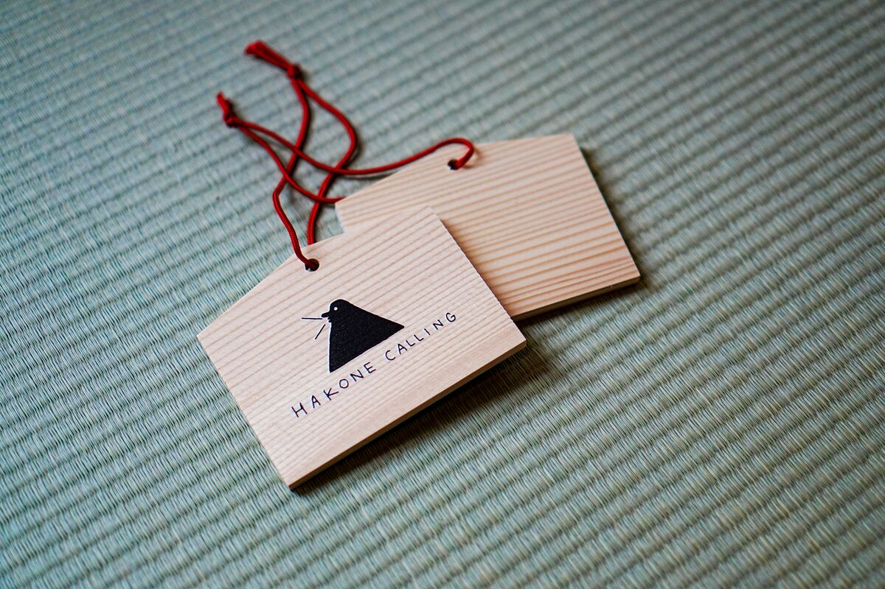
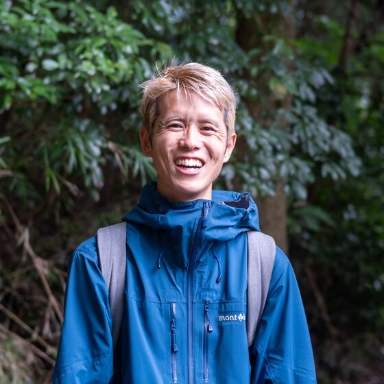

一
簡単な体操と瞑想
簡単な体操で身体をほぐし、短い瞑想で心を落ち着けます。
禅 · コンセプト
情報にあふれた日常から少し離れて、箱根の森で頭を空っぽにする時間を過ごしませんか。約1,000年前から旅人や巡礼者が歩いてきた湯坂路を舞台に、一歩一歩に意識を向ける「歩行禅」を通して、頭の中のざわめきを静め、身体の感覚を取り戻していきます。
旅の見どころ
簡単な体操で身体をほぐし、短い瞑想で心を落ち着けます。

箱根温泉発祥の地とされる熊野神社で、静かに手を合わせます。

足裏の感覚に意識を向けながら、ゆっくりと歩を進める「歩行禅」。心が静かに整っていきます。

ツアーで感じたことを伝統的な「絵馬」に書き留め、グループでシェアします。
旅程
HAKONE CALLING 玄関口に集合
体操と瞑想でスタート
トレイルへ移動
熊野神社を参拝
湯坂路で歩行禅
歩行禅を終える
HAKONE CALLINGに戻り、感想をシェア
解散
案内人

はじめまして、箱根で歩行禅ツアーのガイドを務めるコウヘイです。
エンジニアとして働いたのち、2026年に独立してネイチャーガイドの道へ。1児の父でもあります。並行して、身体感覚や自律神経を整える施術にも長年携わってきました。
そうした心と身体のつながりの経験を活かしながら、この特別な森歩きをご案内できることを嬉しく思います。一緒に心を静め、自分自身と向き合いながら、箱根の森の奥で安らぎのひとときを見つけましょう。
今回は国内の皆さんに向けたモニターツアーとして実施します。ぜひ率直な感想をお聞かせください。
よくある質問
もちろんです！お一人での参加も大歓迎です。
はい、ツアー中は施錠可能なスタッフルームで安全にお預かりします。
ご安心ください。山道を1時間ほど、ゆったりとした瞑想的なペースで歩きます。ほとんどの方が無理なく参加いただけます。
虫除けのため(特に夏場)、長袖・長ズボンを推奨します。履き慣れたスニーカーなど動きやすい靴であれば登山靴は不要です。お飲み物は各自ご持参ください。
小雨程度であれば実施します。霧に包まれた森を歩くのもまた瞑想的で美しい体験です。ただし荒天により中止する場合は、前日19時までにご連絡します。その場合キャンセル料はかかりません。
ご予約
モニターツアー特別価格
通常価格 ¥12,500 · お一人様